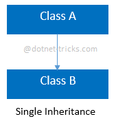
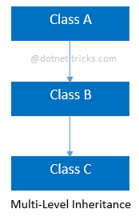
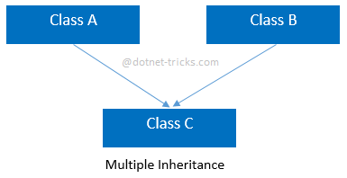
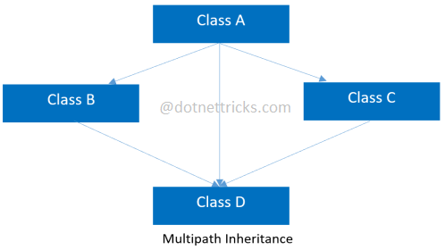
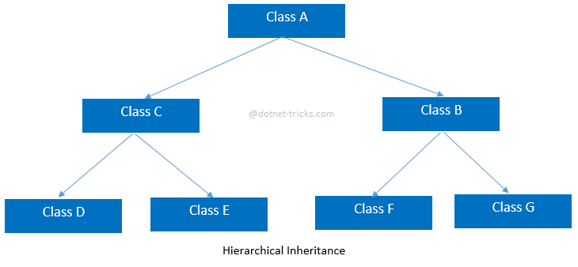
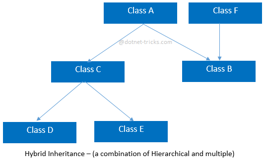

Object Oriented Programming¶
Basic Terminology¶
- Below is the basic representation of how a class named
maincan be initiated.
class main
{
private:
/* data */
public:
main(/* args */);
~main();
};
main::main(/* args */) {}
main::~main() {}
- The function and variables defined under
private:tag can only be accessed from inside the class. - The function and variables defined under
public:tag can be accessed from anywhere the class is defined. return_type main::function_name()can be used to define a method in a class from outside the class. This is useful when the function is defined in a header file and you don’t wish to recompile all the files containing the header file. Example here ismain::main(/* args */)main:::main()is the class constructor. It can be used to create a new default constructor which can take in the basic information needed to make the class.main::~main()is the class deconstructor. It can be used to delete the class once is it no more useful.
Constructors¶
- When a class is made and you don’t make a custom constructor, the compiler generates a default constructor with some random garbage value.
- Custom Constructor can be made using
main::main(/* args */)which can take the variables needed to make the class.
- Below is how the custom constructor can be developed and initiated to store values in the public variables of the class.
Employee::Employee(std::string Name, std::uint8_t Age, std::string CompanyName)
{
this->name = Name;
this->age = Age;
this->company = CompanyName;
}
int main(int argc, char *argv[])
{
Employee employee1 = Employee("Parth", 23, "WPI");
employee1.introduce_yourself();
}
Methods¶
Methods are functions in the class that are created to interact with the class to perform certain tasks.
Encapsulation¶
Encapsulation is done to hide the variables by putting them in a private class. This is done to stop the user from directly changing the value of the variable. This is generally done to avoid variable change with the value it should not be having. There are three types of access modifiers which can determine the access of a variable or function.
public:¶
Any Variable or Function defined under public: modifier can be accessed when using the class.
private:¶
The variable or function defined under private: modifier can only be accessed from inside the function. This v/f cannot be accessed even via inheritance.
The v/f can be indirectly accessed by users if the developer makes methods for their access. This is done by two types of methods shown:
protected:¶
These v/f are not visible when using the class but are accessible/visible when the inheritance class is designed for the primary class.
Getters¶
This is the type of method that can be created to retrieve the value of a particular variable in a private tag without allowing the user the right to access it directly.
If in the above example, the age is made private for the safety of manipulation directly, it can be made available to the user by generating the following method:
Setters¶
This type of method can be used to set the value of a variable you want to keep private from the user’s capability of directly accessing and editing. The developer can use setters to put restrictions on the user from setting invalid data like setting the age below a specific value by checking the input value in set_Age method and only updating it if the requirement is met.
This can be done by generating the method as shown below:
Abstract Class¶
An abstract class in C++ has at least one pure virtual function by definition. In other words, a function that has no definition. The abstract class’s descendants must define the pure virtual function; otherwise, the subclass would become an abstract class in its own right.
Basics¶
Abstraction is done when you want to design a complex program at the backend but do not want the developer/user using your code to tackle/struggle with your code. This is an abstraction layer for users with simplistic usage.
Whichever class signs an abstract class has to implement and create the program to implement the function.
Example:
Assume that the coffee committee sits down and decides on a standard for how the interface of the coffee machine should be. They decided that to make the machine standard for consumers, the device should have an inlet to put coffee powder, an inlet to store water, and a button to brew coffee.
So the committee programmer sits down to make an abstract class for the interface which looks like this as shown below:
class AbstractMachineInterface
{
public:
virtual void putCoffeeHere() = 0;
virtual void putWaterHere() = 0;
virtual void pressButtonToBrewCoffee() = 0;
};
Now, whichever company wants to design the firmware and the machine for their brand of a coffee machine, can inherit this abstract class and design an internal function to the function.
class Keurig : AbstractMachineInterface
{
private:
public:
void putCoffeeHere()
{
// Implement the code here
}
void putWaterHere()
{
// Implement the code here
}
void pressButtonToBrewCoffee()
{
// Implement the code here
}
};
This feature allows each coffee brand to change the functionality as per their needs inside the machine but still keep the outside interface standard for all users.
virtual void putCoffeeHere() = 0;is the function created in the Abstract Class which the new class using the abstract class has to explain and create the procedure for it.
Inheritance¶
Basics¶
Inheritance is useful when you want to create a primary class that contains the common attributes and functions among multiple secondary unique classes and the secondary classes can use the features of the primary class.
Example:
Assume a catalog of various types of cars. There can be electric, petrol and diesel cars. All the cars share common features like the Tyre Rim size, weight, brand, Name, etc. but share different features like features, fuel quality measure, etc. Rather than creating classes for each type and repeating the common attributes, inheritance can be used in them.
class Cars
{
private:
std::string carName, carBrand;
std::uint8_t carWeightInTons;
public:
Cars(std::string name, std::string Brand, std::uint8_t weight_in_tons)
{
this->carName = name;
this->carBrand = Brand;
this->carWeightInTons = weight_in_tons;
}
};
class ElectricCars : public Cars
{
private:
std::uint8_t BatteryCapacity;
public:
ElectricCars(std::string name, std::string Brand, std::uint8_t weight_in_tons, std::uint8_t battery_capacity) : Cars(name, Brand, weight_in_tons) { this->BatteryCapacity = battery_capacity; }
};
int main(int argc, char *argv[])
{
ElectricCars tesla = ElectricCars("Model S", "Tesla", 5600, 2400);
return EXIT_SUCCESS;
}
The class electric cars now have unique features despite retaining the attributes from the Cars class.
-
Format for inheritance is:
class parentClass { private: /* data */ public: parentClass(/* args */); ~parentClass(); }; class childClass : <access_modifier_type> parentClass { private: public: childClass(/* args */); ~childClass(); };The
<access_modifier_type>decided whether the user using thechildClasshas access to the function and variables inparentClass. If the modifier type ispublic, the user can access all the v/f in the parentClass. Leaving it blank, results in default asprivate. -
Creating the constructors as shown below allows you to use the parent constructor directly while just focusing on the parameters needed to populate the child class.
Types of Inheritance¶
Single Inheritance¶

//Base Classclass A
{ public void fooA() { //TO DO: }}//Derived Classclass B : A
{ public void fooB() { //TO DO: }}
Multi-level Inheritance¶

//Base Classclass A
{ public void fooA() { //TO DO: }}//Derived Classclass B : A
{ public void fooB() { //TO DO: }}//Derived Classclass C : B
{ public void fooC() { //TO DO: }}
Multiple Inheritance¶

//Base Classclass A
{ public void fooA() { //TO DO: }}//Base Classclass B
{ public void fooB() { //TO DO: }}//Derived Classclass C : A, B
{ public void fooC() { //TO DO: }}
Multipath Inheritance¶

//Base Classclass A
{ public void fooA() { //TO DO: }}//Derived Classclass B : A
{ public void fooB() { //TO DO: }}//Derived Classclass C : A
{ public void fooC() { //TO DO: }}//Derived Classclass D : B, A, C
{ public void fooD() { //TO DO: }}
Hierarchical Inheritance¶

//Base Classclass A
{ public void fooA() { //TO DO: }}//Derived Classclass B : A
{ public void fooB() { //TO DO: }}//Derived Classclass C : A
{ public void fooC() { //TO DO: }}//Derived Classclass D : C
{ public void fooD() { //TO DO: }}//Derived Classclass E : C
{ public void fooE() { //TO DO: }}//Derived Classclass F : B
{ public void fooF() { //TO DO: }}//Derived Classclass G :B
{ public void fooG() { //TO DO: }}
Hybrid Inheritance¶

//Base Classclass A
{ public void fooA() { //TO DO: }}//Base Classclass F
{ public void fooF() { //TO DO: }}//Derived Classclass B : A, F
{ public void fooB() { //TO DO: }}//Derived Classclass C : A
{ public void fooC() { //TO DO: }}//Derived Classclass D : C
{ public void fooD() { //TO DO: }}//Derived Classclass E : C
{ public void fooE() { //TO DO: }}
Reference: Understanding Inheritance and Different Types of Inheritance
Polymorphism¶
Basics¶
Polymorphism in OOP is when a parent class reference is used to refer to a child class object. It means that both the parent and child class can have the same function name inside and when written properly, the child function can be called. This can be useful as shown below:
class Cars
{
private:
std::string carName, carBrand;
std::uint8_t carWeightInTons;
public:
Cars(
std::string name,
std::string Brand,
std::uint8_t weight_in_tons)
{
this->carName = name;
this->carBrand = Brand;
this->carWeightInTons = weight_in_tons;
}
virtual void info(void)
{
std::cout << "Car: " << this->carName << std::endl;
}
};
class ElectricCars : public Cars
{
private:
std::uint8_t BatteryCapacity;
public:
ElectricCars(
std::string name,
std::string Brand,
std::uint8_t weight_in_tons,
std::uint8_t battery_capacity) : Cars(name, Brand, weight_in_tons)
{
this->BatteryCapacity = battery_capacity;
}
void info(void)
{
std::cout << "Battery Capacity: " << std::to_string(this->BatteryCapacity) << std::endl;
}
};
Unless the child class wants the function info() to change its behavior, it can keep on using the parent class function info(). But if the child class wants the same function to perform different actions, it can be changed using polymorphism.
- If you want to enable polymorphism for a function, remember to add the
virtualtag before it in the parent class so that when called, the compiler knows that it has to search for the child class function with the same name. - If after defining
virtualin the parent class, you do not define the same function in the child class; the compiler will run the function from the parent class itself.
Use Cases¶
Dereferencing the Object¶
Assume an object tesla1created as follows:
You can dereference the object using a pointer and access it using → operator as follows:
Both the cases of tesla1.info() and c1->info() will output the same results.
Correct Use Case¶
Always create a class object using pointers.¶
Creating a class object with a pointer allows you to dereference the object. This allows you to easily pass the class across functions and edit the values by simply going to the memory location and making the desired changes.
class cat
{
private:
public:
int Age;
};
void DoSetAge(cat *pCat, std::uint8_t pAge)
{
pCat->Age = pAge;
std::cout << "DoSetAge Function: " << pCat->Age << " Address: " << pCat << std::endl;
}
int main(int argc, char *argv[])
{
cat *mCat = new cat;
mCat->Age = 0;
std::cout << "Main Function: " << mCat->Age << " Address: " << mCat << std::endl;
DoSetAge(mCat, 10);
std::cout << "Main Function: " << mCat->Age << " Address: " << mCat << std::endl;
return EXIT_SUCCESS;
}
The Output would look similar to like this:
Main Function: 0 Address: 0x559d87746eb0
DoSetAge Function: 10 Address: 0x559d87746eb0
Main Function: 10 Address: 0x559d87746eb0
As seen here, the pointer is passed to be an object which allows you to modify the object directly by accessing the addresses.
⚠️ Warning: The new keyword might be new (pun intended) for you. You can look into it further by clicking here:
❗ When working with inherited classes, the correct format is:
Defining the variable this way will help your object act like a pointer and you can access the base_class function and variables directly and in the hierarchy using → operator.
Defining Functions properly¶
If you are making a class for a header file that can be accessed by someone else, the best method is to make those functions using the virtual tag. This allows the inherited classes to redefine the function if necessary without messing with the naming or the header file.
Hacks¶
friend¶
reinterpret_cast¶
Resources¶
- Types of Inheritance in C++ Explained With Examples | Simplilearn
- Can I access private members from outside the class without using friends?
- Can I access private members from outside the class without using friends?
- reinterpret_cast conversion - cppreference.com
- reinterpret_cast in C++ | Type Casting operators - GeeksforGeeks
- Friend declaration - cppreference.com
- Friend Class and Function in C++ - GeeksforGeeks
- Understanding Inheritance and Different Types of Inheritance